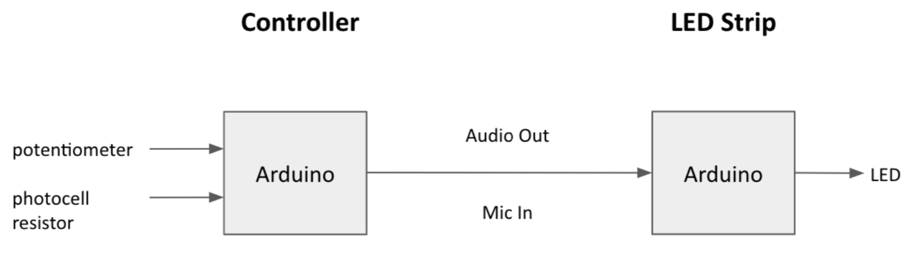
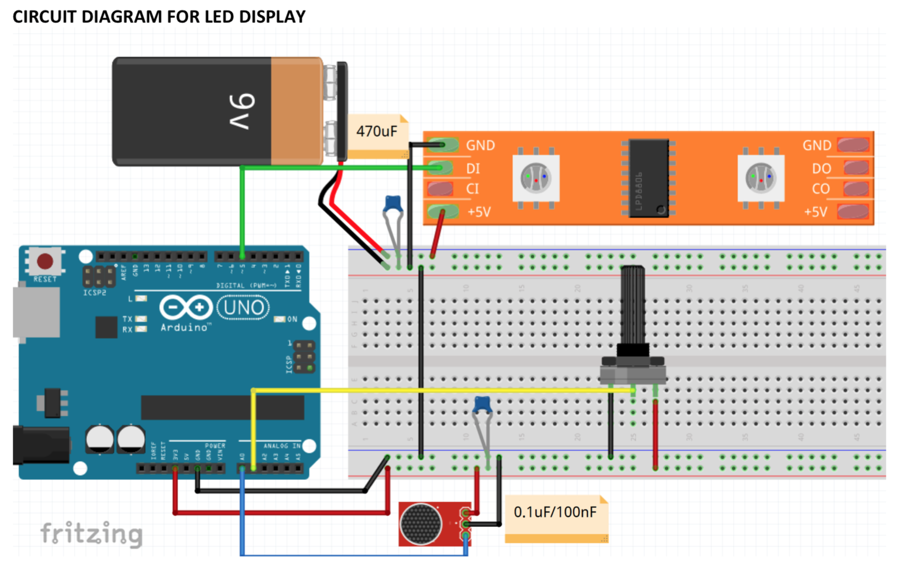
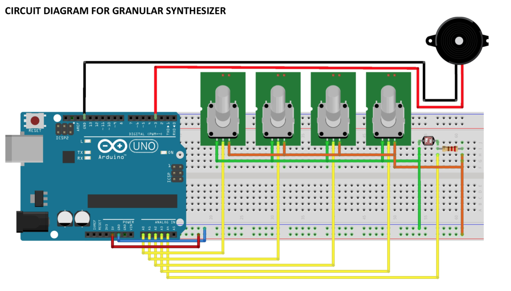
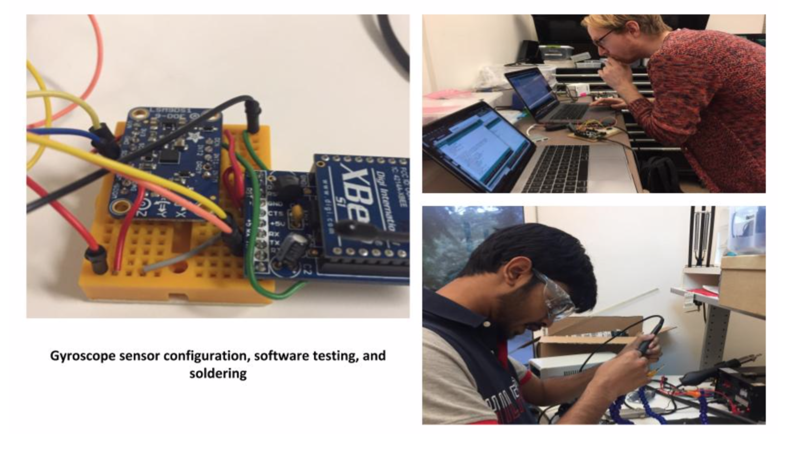
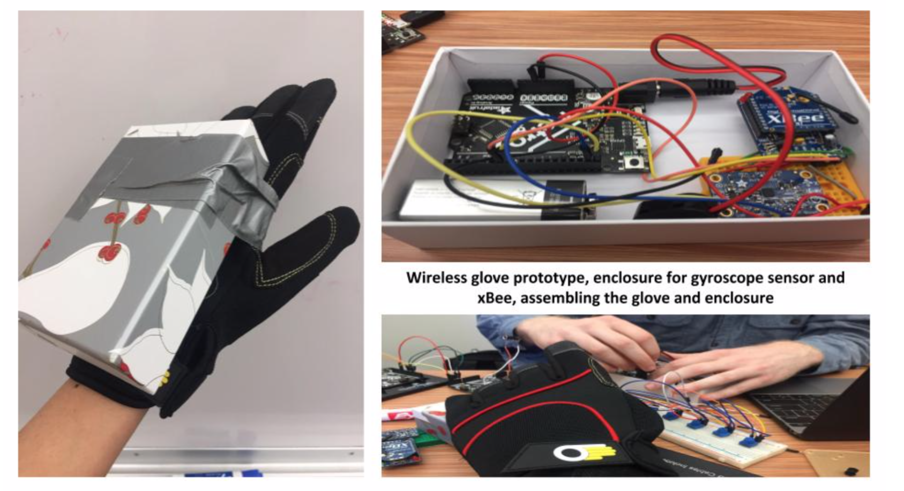
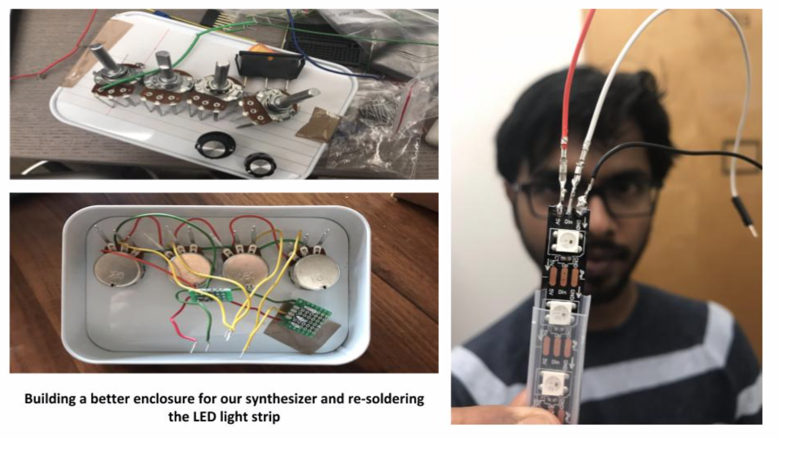

🎚 Protek Audioino Sound and Light Show
🎬 Video
https://www.youtube.com/embed/_SJ8OJh05Cw
🤔 Problem Space
The Protek Audioino was an open-ended project to create an interactive physical computing system. We had a lot of freedom to experiment and try different things. The only constraints were to incorporate the following requirements: - Hardware - Must use an Arduino and any combination of sensors, actuators, circuits, etc. - Software - The code for the hardware prototype has to be interactive. - Physical - Must have an enclosure for the electronics that serves to communicate the purpose and goals of the prototype.
My teammates and I built a photocell theremin and reactive light device for our physical computing course. We called it the Protek Audioino, after our initials rearranged (Proshonjit, Tiffany, and Kevin).

This is a model of how all the parts of the system interact.
The device we built provides an exciting experience for musical performance. Our prototype combines electronic sensors with sound and a visual component. The central hub or server of our system is a granular synthesizer. Manipulating the knobs on the synthesizer alters the tone and pitch of the sound being created. Additionally, we have included an accompanying visual display using an LED strip. The visual display responds with light patterns according to the sound from the synthesizer via a microphone sensor.
The granular synthesizer or “controller” in our system uses pulse with modulation to convert a series of numbers into sound, which we have amplified with a speaker. The potentiometer controls some of the different oscillators such as timbre and tone. The photocell resistor is the pitch controller. The pitch changes based on the amount of light the photocell resistor receives.
For our visual display, we are using a microphone amp sensor to capture the sound from the synthesizer and trigger different light patterns to appear on the LED strip. We also added a potentiometer to control the light sensitivity of the LED strip.
✋ Initial Intervention
We intended to incorporate wearable gloves and gyroscopes in our system. Gyroscope sensors were attached to the gloves along with xBees for wireless communication to and from the granular synthesizer. User movement from the gloves would control the synthesizer, and trigger the lights in turn, as if the performer was conducting in front of an orchestra.
We made the light component of the system first, because it required the least user interaction.

🎨 Design & Refine
We had to refine our scope several times. Initially, we intended to incorporate wearable gloves in our system. Gyroscope sensors were attached to the gloves along with xBees for wireless communication to and from the granular synthesizer. User movement from the gloves would control the synthesizer, and trigger the lights in turn, as if the performer was conducting in front of an orchestra.
While we were able to get the wearable component working, we didn’t anticipate the difficulty in mapping the raw data from the gyroscope output and converting those numbers into a usable range to trigger notes on the synthesizer.
We also experience pulse width modulation interference between the XBee sensors and gyroscopes that we used.
After many problems, (including a gyroscope overheating and catching fire 👨🚒🧯🔥) we decided to use potentiometers and a photocell resistor for the synth. Adding a photocell resistor provided a similar experience to what we were trying to prototype with the gyroscope sensors.
 This is the circuit we built for the synthesizer itself.
⚙️ Process Photos
Proshonjit and I spent a lot of time in the lab debugging and soldering. Tiffany's not pictured (she's taking the photos!) but worked just as hard. 

This is the first prototype for the wearable glove. While we had it working (briefly), eventually a gyroscope overheated and burned itself out. 
We put our project into two different enclosures...

...and tested it in my home studio!
🕰 Future Work
If we had more time (and money for parts), we would have worked out the wearable and wireless components.